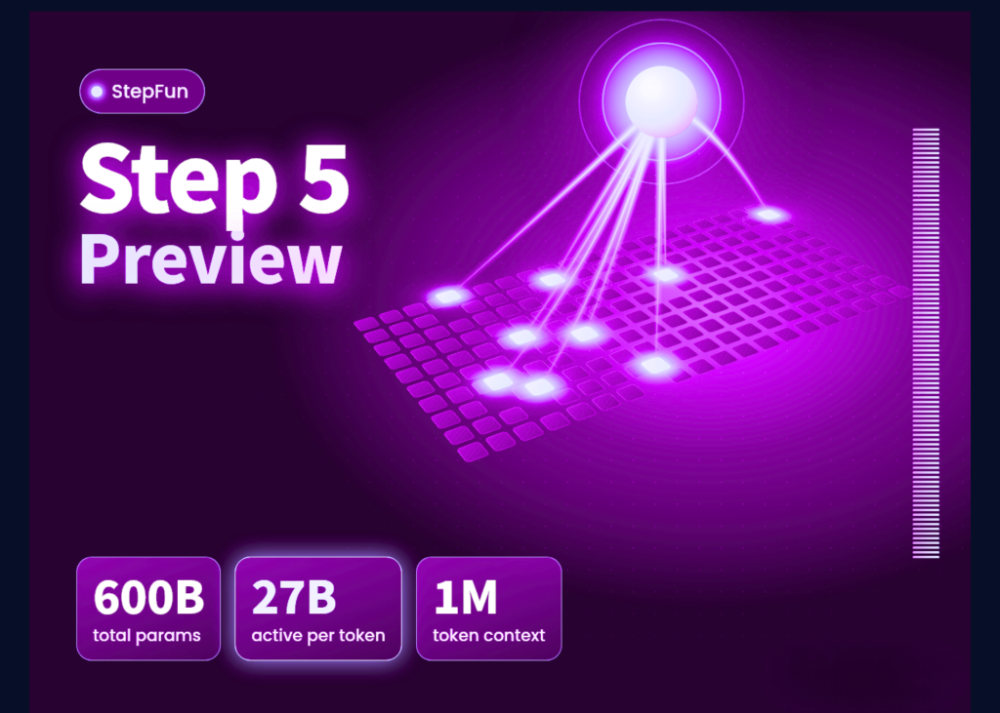

03 MarkTechPost 게시일 2026.09.21
StepFun, 100만 토큰 Step 5 미리 공개

StepFun이 장문 작업과 에이전트형 업무를 겨냥한 Step 5 Preview를 공개했다. 코딩, 전문 지식 업무, 금융을 목표 분야로 콕 집었다. 발표의 중심 메시지는 최고 성능보다 작업당 비용 대비 성능이다.
핵심 브리핑
이 모델은 긴 문서를 읽고, 도구를 여러 번 쓰며, 여러 단계를 거치는 업무를 처리하려는 AI다. 비전문가 기준으로 보면, 한 번에 훨씬 긴 자료를 보고 오래 이어지는 작업을 맡기려는 모델이다.
Step 5 Preview는 6,000억 매개변수 중 토큰마다 약 270억만 쓰는 희소 MoE 구조다. 활성 비율은 토큰당 약 4.5%다. StepFun은 이 구조로 지능 수준은 유지하면서 비용을 낮췄다고 주장했다.
공개된 주요 사양은 이렇다.
- 모델 ID는 step-5-preview다
- 문맥창은 100만 토큰이다
- 입력은 텍스트, 이미지, 영상을 받는다
- 추론 강도는 low, medium, high를 지원한다
- 스트리밍, 툴 콜링, JSON Mode, JSON Schema, 프롬프트 캐싱을 지원한다
- 현재는 호스티드 API와 StepFun 플랫폼에서 쓸 수 있다
- 오픈 웨이트는 2026년 10월 15일 공개 예정이라고 StepFun이 밝혔다
하드웨어 조건도 만만치 않다. 기사에는 6,000억 매개변수를 BF16으로 올리면 KV 캐시를 빼고도 약 1.2TB가 필요하다고 적었다. 오픈 웨이트가 나오면 다중 GPU 서버를 준비해야 한다는 뜻이다.
StepFun은 긴 작업 성능도 사례로 제시했다. 연구 작업에서 한 번의 에이전트 행동으로 웹 요청 950건을 조정했다고 밝혔다. 학습과 추론 정렬, MTP-3 추측 디코딩, FP8 MoE, KV 캐시 오프로딩을 적용했고, 장기 강화학습에서는 종단 간 속도가 3배 이상 빨라졌다고 설명했다.
주요 트렌드
이번 발표는 플래그십 모델 경쟁이 '가장 큰 모델'보다 '긴 작업을 얼마나 싸게 처리하느냐'로 이동하고 있음을 보여준다. StepFun은 100만 토큰 문맥과 낮은 출력 단가를 앞세워 장기 에이전트 업무를 노렸다.
배포 전략도 이중 구조다. 지금은 API로 먼저 시장을 열고, 나중에 오픈 웨이트를 풀어 자가 호스팅 수요를 받는다. 기업 입장에서는 빠른 시험은 API로 하고, 규제나 비용 요구가 맞으면 온프레미스(사내 서버에 직접 설치해 쓰는 방식)로 검토할 수 있는 그림이다.
다만 비용 비교에는 단서가 붙는다. Artificial Analysis는 비슷한 가격대 모델의 중앙값을 입력 100만 토큰당 1.88달러, 출력 100만 토큰당 10.00달러로 제시했다. 그런데 Step 5 Preview는 인덱스 측정에서 출력 토큰 1억 6,000만 개를 생성했다. 비교군 중앙값은 9,200만 개였다. 토큰당 가격이 낮아도 답변이 길면 총비용 이점이 줄 수 있다.
| 항목 | Step 5 Preview | Claude Opus 5 | GPT-6 Astra |
|---|---|---|---|
| FrontierFinance | 66.4 | 69.7 | 55 |
| DRACO | 83.3 | 87.6 | 76.8 |
업계의 움직임
독립 평가는 Artificial Analysis가 내놨다. 이 기관은 Step 5 Preview의 Intelligence Index를 44로 측정했고, StepFun API에서 초당 99.8토큰을 기록했다고 밝혔다. 반면 코딩 벤치마크 3종에서는 GPT-6 Astra와 Claude Opus 5가 모두 앞섰다고 기사에 적혔다. StepCodeBench는 StepFun 자체 벤치마크라는 단서도 함께 공개됐다.
시사점과 체크포인트
금융IT 기업은 이 모델을 긴 문서 검토와 다단계 업무 자동화 후보로 볼 수 있다. 투자 설명서, 규정집, 내부 매뉴얼, 고객 질의 이력처럼 길고 엮인 자료를 한 번에 다루는 업무가 맞는지 먼저 따져볼 만하다.
- API 시험 도입 시 입력 단가뿐 아니라 실제 출력 토큰 길이를 함께 재야 한다
- 오픈 웨이트를 기다린다면 GPU 메모리와 KV 캐시 요구량을 먼저 계산해야 한다
- 벤치마크는 일부가 StepFun 자체 측정이다. 금융 도메인 정확도는 별도 검증이 필요하다
- 영상 입력과 툴 콜링을 지원하므로, 화면 기반 업무 자동화와 문서 처리 자동화를 한 모델로 묶을 수 있는지 볼 만하다
가격표도 확인할 필요가 있다.
| 토큰 구분 | 가격 |
|---|---|
| 입력, 캐시 미스 | 100만 토큰당 1.00달러 |
| 입력, 캐시 히트 | 100만 토큰당 0.05달러 |
| 출력, 추론 포함 | 100만 토큰당 2.70달러 |
주요 용어
원문 정보
제목: StepFun Launches Step 5 Preview: A 600B-Total, 27B-Active MoE Model With 1M Context for Long-Horizon Agentic Work
게시일: 2026.09.21
출처 URL: https://www.marktechpost.com/2026/09/20/stepfun-launches-step-5-preview/